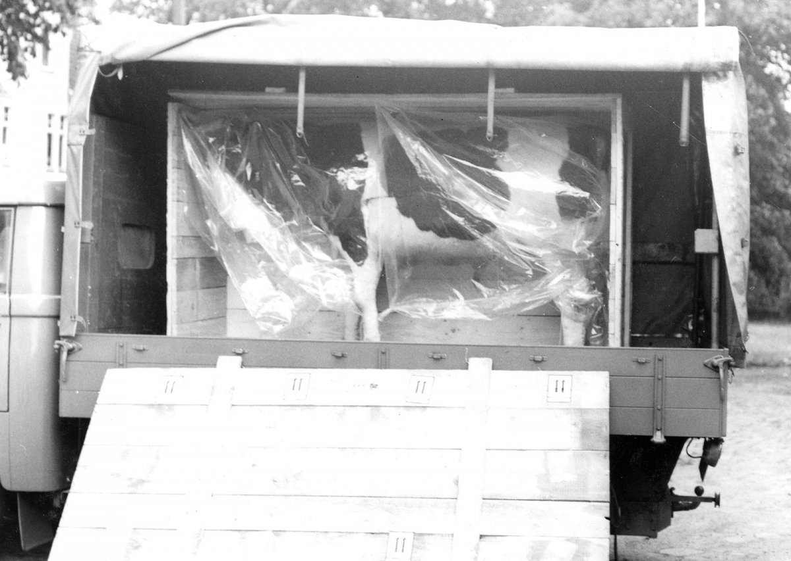
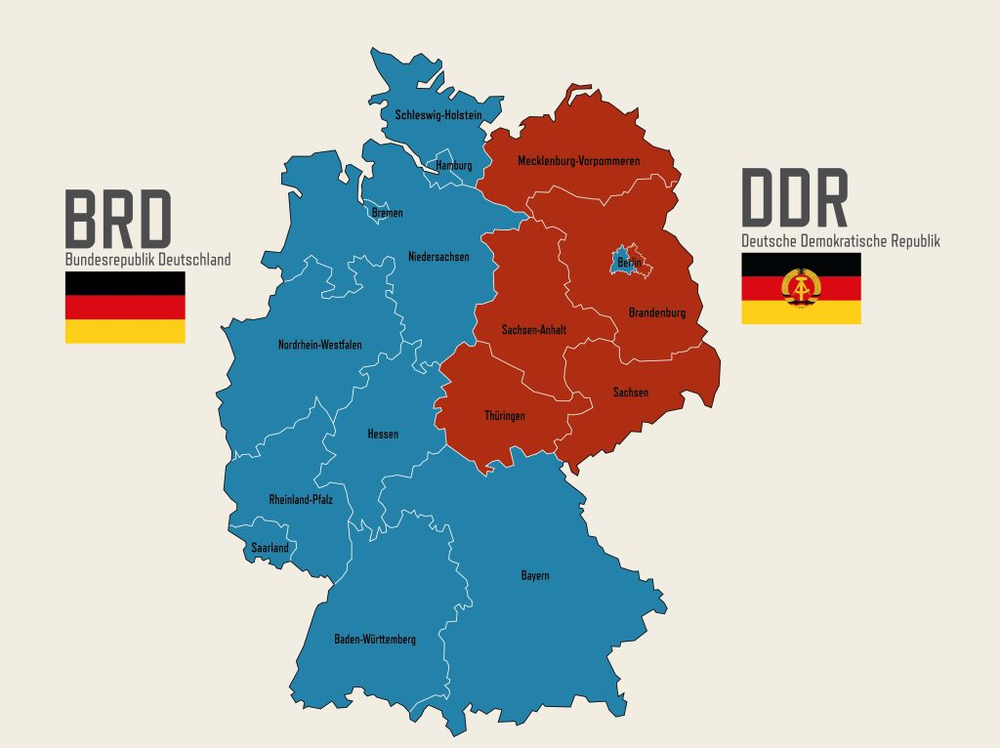

Zweimal schon hat eine „trojanische Kuh" Fluchtwillige in den Westen getragen. Doch beim dritten Versuch fliegt der Trick mit dem Ausstellungsobjekt auf.
Am Abend des 7. Juli 1969 transportieren zwei Fluchthelfer den präparierten Bullen mit einem Klein-Lastwagen über die Transitautobahn Richtung West-Berlin. Unterwegs steigt eine 28-Jährige aus Karl-Marx-Stadt (Chemnitz) zu, die mit ihrem West-Berliner Verlobten im Westen zusammen leben will. Sie verbirgt sich in dem hohlen Tierkörper, der in einer Holzkiste steht. Für die Flucht hat der Verlobte 5.000 D-Mark angezahlt; gelingt das Vorhaben, ist der gleiche Betrag noch einmal fällig.
Doch am DDR-Grenzübergang Drewitz wird das Versteck entdeckt, das Trio festgenommen und in die Potsdamer Stasi-Untersuchungshaftanstalt in der Lindenstraße verbracht.
Die Fluchthelfer werden am 15. Oktober 1969 vom Bezirksgericht Potsdam „wegen staatsfeindlichen Menschenhandels" zu mehr als drei Jahren Gefängnis verurteilt, die 28-Jährige erhält wegen versuchten „ungesetzlichen Grenzübertritts" eine Haftstrafe von zwei Jahren und zehn Monaten. Von diesen 34 Monaten ist sie insgesamt 17 Monate in der Potsdamer Stasi-U-Haftanstalt eingesperrt und muss dort im sogenannten Strafgefangenen-Arbeitskommando Arbeiten in der Waschküche, der Nähstube und vor allem in der Küche verrichten. Nach 17 Monaten wird sie unter unmenschlich engen Bedingungen in einem Gefangenen-Transportwagen in das Stasi-Gefängnis in Karl-Marx-Stadt (Chemnitz) verbracht. Im Zuge des Häftlingsfreikaufs durch die Bundesrepublik erfolgt vier Wochen später in einem Bus-Sammeltransport ihre Ausreise in den Westen.
